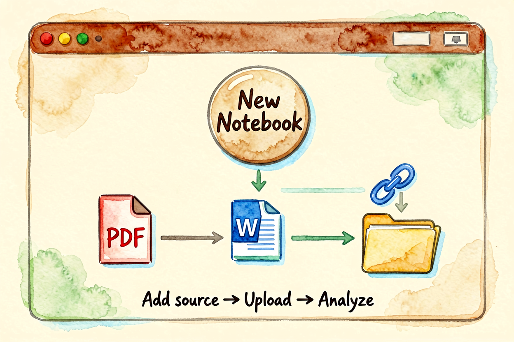
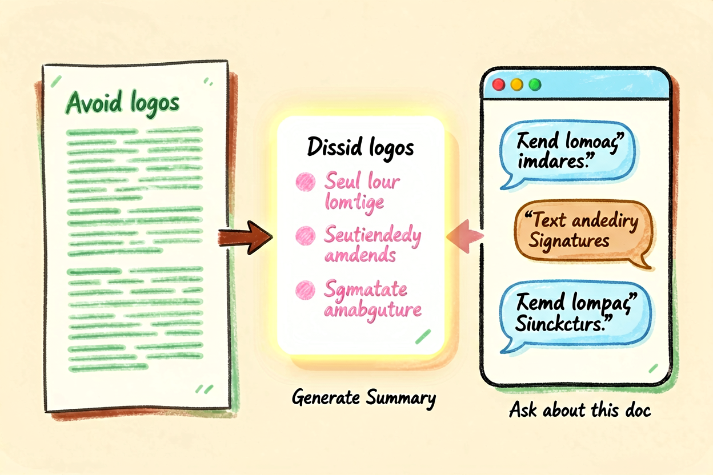
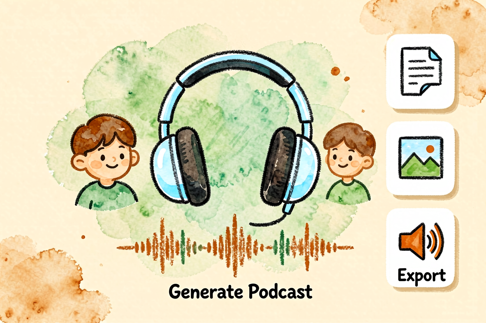
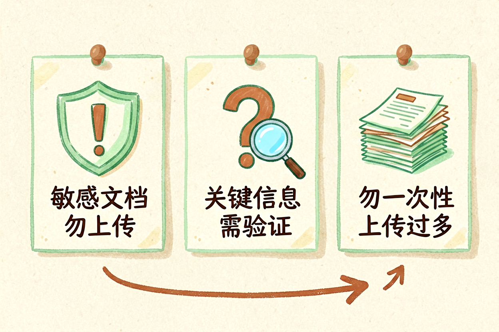
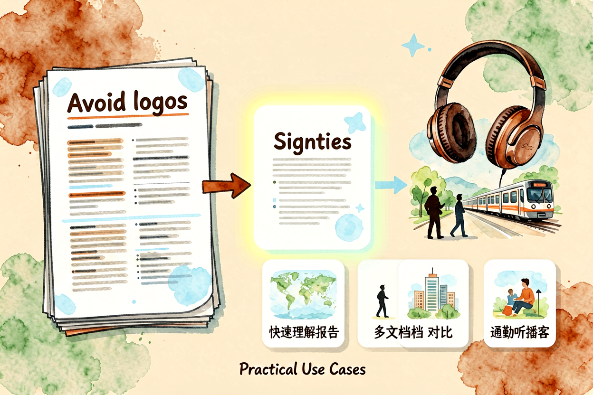
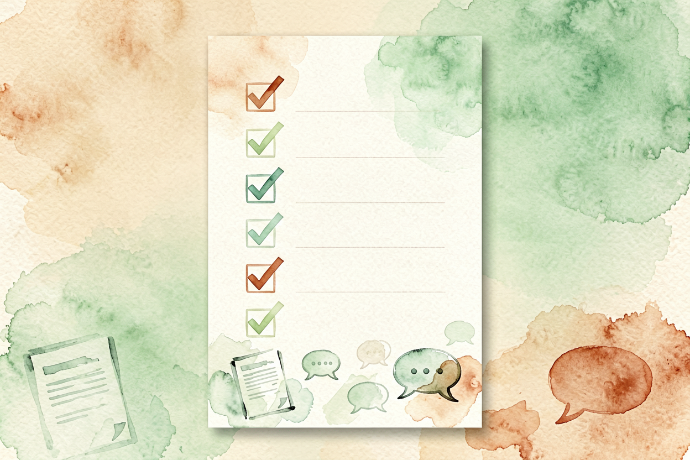

NotebookLM 新手教程：把文档变成可对话的知识库
扔进 PDF、PPT、网页链接，Google 的 NotebookLM 能秒变知识库。本文从零讲清怎么用，新手一小时上手。
NotebookLM新手教程是本文的核心主题。 !配图1NotebookLM界面概览
{kind=link}
NotebookLM新手入门：Google 的文档对话工具
NotebookLM 是 Google 出品的 AI 知识管理工具，核心功能是上传文档后变成可对话的知识库。上传 PDF、Word、PPT、网页链接后，它能逐字读取、精准定位、连贯回答。适合研究、学习、资料整理等场景。
和NotebookLM 评测里讲的高级功能不同，本文专注新手入门，从上传文档到提问到生成摘要全套流程。NotebookLM 的优势是 Google 生态集成、来源可信、免费可用，但中文支持有待提升。
NotebookLM新手入门：注册与界面熟悉

打开 notebooklm.google.com，用 Google 账号登录。界面分三块：左侧笔记本列表、中间文档区、右侧对话区。左侧可创建多个笔记本，每个笔记本对应一个研究主题。
新手建议先创建一个测试笔记本，上传一份文档熟悉交互逻辑。NotebookLM 支持 Google Drive 直接导入，也支持本地文件上传，灵活度高。
NotebookLM新手入门：上传文档与来源管理

上传文档后，NotebookLM 会自动扫描全文，生成来源索引。每个回答都会标注引用来源，方便验证准确性。支持 PDF、Word、PPT、TXT、网页链接，单次最大 500 页。
文档管理是 NotebookLM 的核心功能。你可以上传多份文档到一个笔记本，AI 会跨文档综合分析。比如上传三份行业报告，问「这三份报告对 AI 趋势的判断有何异同」，NotebookLM 能整合输出结构化对比。
NotebookLM新手入门：提问与对话

提问技巧参考AI 提示词怎么写里的 C.L.E.A.R. 框架。注意三点：问题要具体、来源要明确、追问要连贯。
具体提问：「第三章提到的技术方案有什么缺陷」比「这篇文章说了什么」更有效。
来源标注：每个回答都带引用，点击可跳转到原文位置，方便验证。
连贯追问：同一话题连续问多个问题，NotebookLM 能保持上下文连贯，效率远高于单轮提问。
NotebookLM新手入门：生成摘要与音频摘要

NotebookLM 能自动生成文档摘要，也可生成音频摘要——AI 用两个虚拟主持人的对话形式总结文档内容，适合通勤、做家务时听。音频摘要生成需要几分钟，但体验新颖，适合碎片化学习。
和AI 内容创作指南里讲的逻辑一致，摘要质量取决于文档质量和提问方式。文档结构清晰、内容完整，生成的摘要更准确。
NotebookLM新手入门：常见误区与避坑

误区一：把所有文档都丢进去不分类笔记本按主题分类，别把所有文档混在一个笔记本里，否则检索效率低。
误区二：不验证 AI 输出的准确性 NotebookLM 会标注来源，但引用可能断章取义。重要信息要二次核实，别直接采信。
误区三：中文文档效果打折扣 NotebookLM 中文支持弱于英文，中文文档建议先用AI 翻译工具转成英文再处理。
关于 NotebookLM 新手教程，核心逻辑是「文档是基础，提问是技巧，验证是关键」。别指望一键完美，但能快速出初稿，省掉最耗时的整理工作。
NotebookLM 新手教程的关键是动手试。别看完就忘，当天就上传一份文档测试，让操作成为习惯。用多了自然熟练。

本文信息核对于 2026-09-07。AI 产品的价格、免费额度与功能变动频繁，实际以各工具官网当前说明为准。